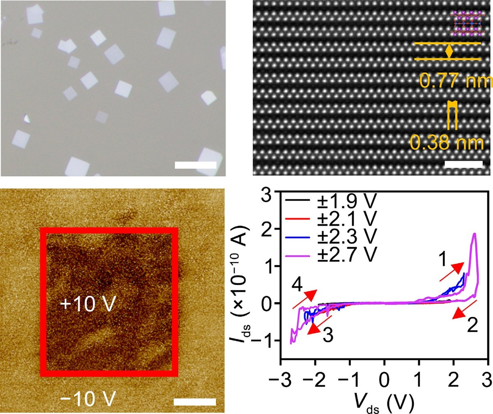

NANO RESEARCH · 2026
Synthesis and Intrinsic Out-of-Plane Ferroelectricity of 2D Bi2SiO5
Nano Research, 2026 · DOI: 10.26599/NR.2025.94908068
查看原文 ↗Read the paper ↗
研究背景Background
二维铁电材料兼具原子级厚度与自发极化，是构建微型化、低功耗、高密度非易失性存储器件的理想候选。然而随着厚度减薄，退极化效应会显著抑制铁电性，使得本征二维铁电体（尤其是面外极化体系）极为稀缺。
Two-dimensional ferroelectric materials, combining atomic-scale thickness with spontaneous polarization, are ideal candidates for miniaturized, low-power, high-density non-volatile memory. However, ferroelectricity is often suppressed by depolarization effects as thickness decreases, making intrinsic 2D ferroelectrics—especially those with out-of-plane polarization—extremely scarce.
研究方法Methods
通过化学气相沉积（CVD）合成二维 Bi2SiO5（BSO）纳米片；利用角分辨偏振拉曼（ARPRS）与二次谐波（SHG）确认其非中心对称晶体结构；借助压电力显微镜（PFM）观测可翻转极化与铁电回滞回线，并进一步构建垂直器件验证铁电开关行为。
2D Bi2SiO5 (BSO) nanosheets were synthesized by chemical vapor deposition (CVD). Their non-centrosymmetric structure was confirmed by angle-resolved polarized Raman spectroscopy (ARPRS) and second-harmonic generation (SHG). Switchable polarization and ferroelectric hysteresis loops were revealed by piezoresponse force microscopy (PFM), and ferroelectric switching was further validated in a vertical device.
主要结论Conclusions
实验证实了二维 BSO 的本征面外铁电性，显著扩展了二维铁电材料家族，为其在非易失性存储及存算一体器件中的应用奠定了基础。
The intrinsic out-of-plane ferroelectricity of 2D BSO is experimentally established, significantly expanding the 2D ferroelectric family and paving the way for its integration into non-volatile memory and in-memory computing devices.